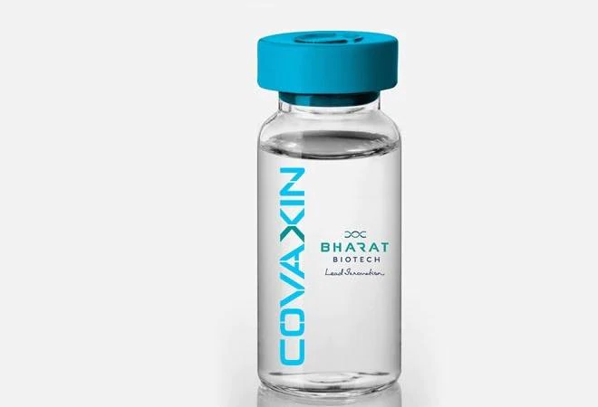

Covaxin (codenamed as BBV152) is an inactivated virus-based COVID-19 vaccine developed by Bharat Biotech in
collaboration with the Indian Council of Medical Research. In May 2020, Indian Council of Medical Research's
(ICMR's)
National Institute of Virology approved and provided the virus strains for developing a fully indigenous
COVID-19 vaccine.
In June 2020, the company received permission to conduct Phase I and Phase II human trials of a
developmental COVID-19
vaccine codenamed BBV152, from the Drugs Controller General of India (DCGI), Government of India.
In November 2020, Covaxin received the approval to conduct Phase III human trials[10] after completion of Phase I and II.